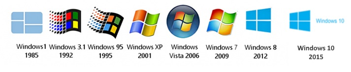

Geschiedenis
Bill Gates en Paul Allen spelen een cruciale rol in de geschiedenis en het ontstaan van Microsoft.
De studenten zaten bij elkaar op school in Seattle, en konden al gauw vrij goed onderweg met
computers. Destijds waren computers erg duur en konden in het computer center corporation gebruik
maken van de computers, namelijk de Teletype Model 33. Ze wilden deze computers graag gebruiken om
simpele computerprogramma’s te programmeren zoals “boter, kaas en eieren” of om hun eigen klassen
roosters te maken. Het gebruik van de schoolcomputers was alleen niet gratis, dit kostte namelijk 40
dollar per uur, dit was voor de studenten niet te betalen. In plaats hiervan verhielpen ze de
computers van bugs en virussen om zo toch gebruik te kunnen maken van de computers. Dit ging een
lange tijd erg goed tot dat een van de studenten betrapt werd op het stelen van computer apparatuur.
De studenten werden meteen verbannen uit het CCP. Kort nadat ze verbannen waren vormde ze hun eigen
groep genaamd de Lakeside Programming Group. Zo verdiende met hun programmeer kwaliteiten geld door
bedrijven met bugs in hun computersysteem. Hierna gingen de studenten uit elkaar en ging ieder zijn
eigen weg. Een aantal jaren later in 1975 kondigde Popular Electronics een revolutionaire product
aan namelijk de Altair 8800. Dit is Paul Allen en Bill Gates niet ontgaan want ze zijn kort hierna
met elkaar in contact gekomen. Ze maakte plannen om een eenvoudige programmataal interpreteerder te
maken.

BASIC-Interpreter voor de Altair 8800
Altair BASIC is een basic interpreter voor de altair 8800, een van de eerste computers zoals we die
nu kennen. "Een interpreter is een computerprogramma dat steeds een statement van de broncode van
een computerprogramma vertaalt naar een voor de processor begrijpelijke vorm." uitleg interpreter
van wikipedia.org. Altair BASIC is Microsofts's eerste product, nog als Micro-Soft.
MS-DOS
MS-DOS is een van Microsoft's eerste producten in hun bestaan. Toen IBM, een andere technologisch
bedrijf, bezig was met het bouwen en verkopen van een van de eerste computers de IBM-PC heeft
Microsoft een deal met IBM gemaakt door het besturingssysteem te leveren voor de computers. De
sodtware genaamd QDOS, wat staat voor Quick and Dirty Operating
System, werd gekocht voor 50.000 dollar, werd aangepast door Microsoft en kreeg de naam Microsoft
Disk Operating System. Doordat Microsoft in de deal heeft inbegrepen dat het besturingssysteem aan
derden verkocht mocht worden groeide Microsoft uit tot een gevestigde naam in de computerwereld.
Windows en Office
Windows is in 1985 uitgebracht als grafische extensie voor MS-DOS(MS-DOS werd nog vooral gebruikt
voor het opstarten van de pc en kon maar een programma tegelijk draaien). In 1990 bracht Microsoft
'Office' uit, hiermee maakte Microsoft het makkelijker om documenten te maken. Dit is uiteindelijk
uitgegroeid tot de Microsoft Office zoals we die nu kennen. Ook
is Windows uitgegroeid tot een van de meest gebruikte besturingssystemen ter wereld.
